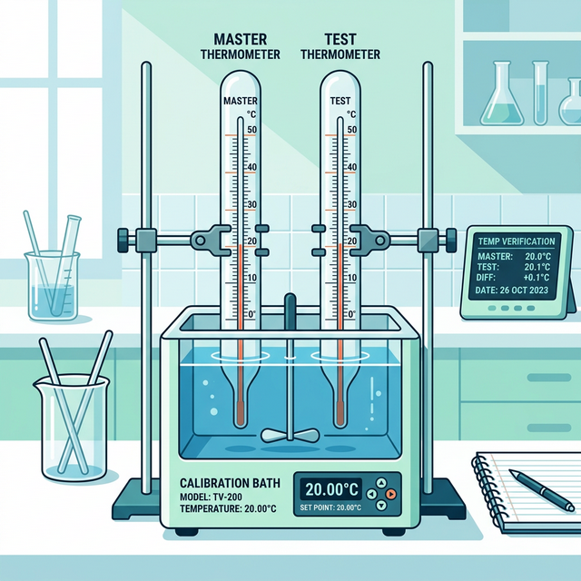

🌡️ Thermometer Verification
Procedure for verifying test thermometers against calibrated master thermometers. Ensures temperature measurement accuracy across the laboratory.

Essential requirements before initiating thermometer verification to ensure valid comparative readings between Master and Test instruments.
- • Master Thermometer Requirement: Must possess a valid calibration certificate and have equal or better resolution than the test thermometer.
- • Immersion Condition: Both Master and Test thermometers must be immersed to the same specified depth in an appropriately controlled water bath or stable environment.
- • Equilibrium Time: Both thermometers must be placed and left to stabilize for at least 1 hour to reach thermal equilibrium with the surrounding test environment prior to recording the first reading.
Systematic recording of comparative temperatures ensuring proper intervals and stabilization.
- Verify the physical condition of the test thermometer (no separated liquid columns, no cracks, clear scale).
- Check the calibration certificate status of the Master Thermometer and ensure the required range is covered.
- Immerse both thermometers closely together in the medium. Ensure bulbs/sensors do not touch the walls or bottom of the container.
- Allow at least 1 hour for stabilization.
- Record the first paired reading (Master $T_{M1}$ and Test $T_{T1}$).
- Wait for an interval of at least 5 minutes.
- Record the second paired reading ($T_{M2}$, $T_{T2}$).
- Repeat the 5-minute intervals until a total of 5 consecutive paired readings have been recorded.
- Record details of the Master Thermometer in the report including: Resolution, Calibration Date, Calibration Range, and Calibration Certificate Number.
The true value of the Test Thermometer ($y$) must be calculated using the Master Thermometer's calibration linearity equation.
y = mx + c
Where:
$y$ = True Temperature (°C) derived from Master
$m$ = Gradient (Slope) from calibration cert
$x$ = Actual reading shown on Master Thermometer
$c$ = y-intercept from calibration cert
- Calculate the true temperature ($y_i$) for each of the 5 Master readings ($x_1 \dots x_5$).
- Calculate the absolute difference $\Delta T = |T_{Test} - y|$ for each paired reading.
- Verify that the maximum $\Delta T$ does not exceed the accepted tolerance level.
The maximum temperature difference between the derived Master true value ($y$) and the Test thermometer reading ($T_{Test}$) shall not exceed $1.0^{\circ}\text{C}$ for all 5 readings.
Tolerance limit: $\le 1.0^{\circ}\text{C}$.
If the Test thermometer fails to meet the $\le 1.0^{\circ}\text{C}$ specification:
1. Do not immediately discard the thermometer.
2. Repeat the entire verification process by a different analyst (Second checking).
3. If the second verification also fails, the test thermometer is deemed 'Out of Tolerance' and must be removed from use or sent for official recalibration/repair.
• PKK/047A — Thermometer Verification Record Sheet
• PKK/047B — Generation of Linearity Equation for Actual Temperature Reading